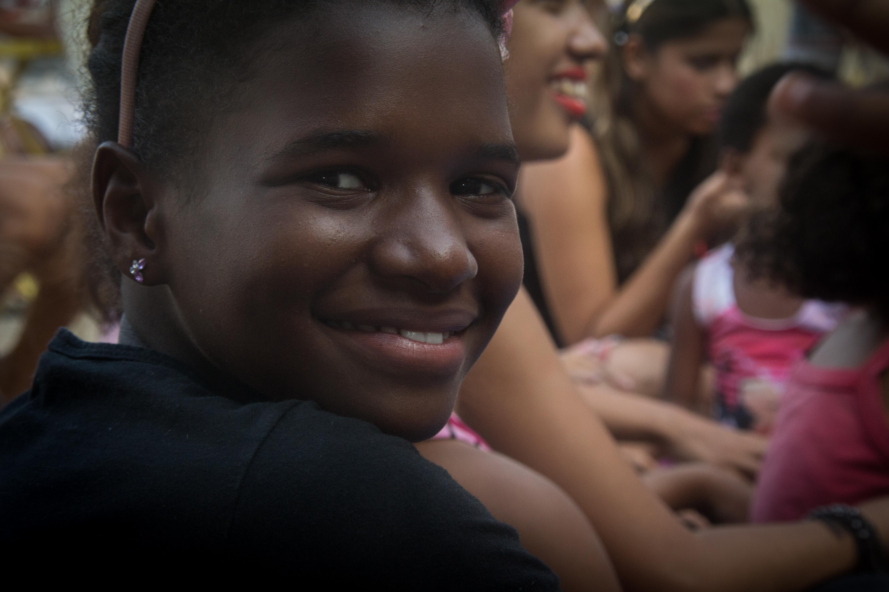
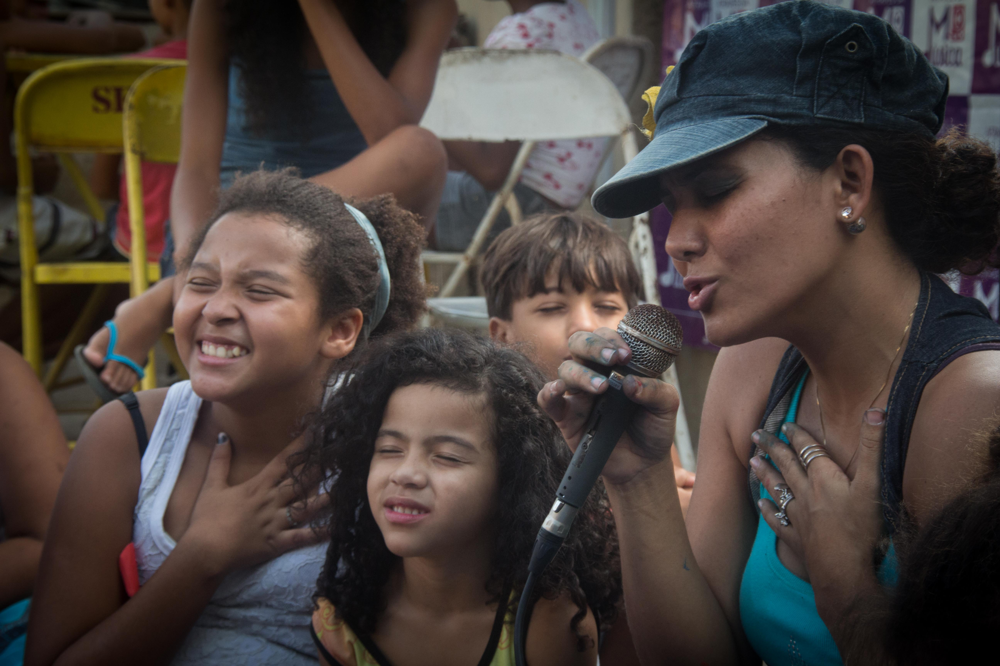
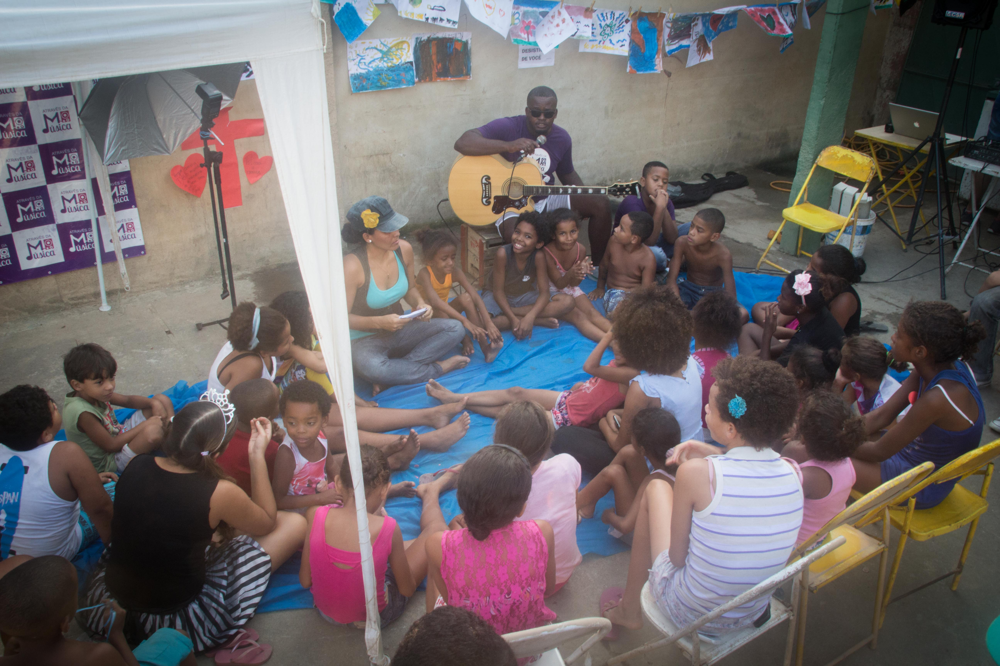
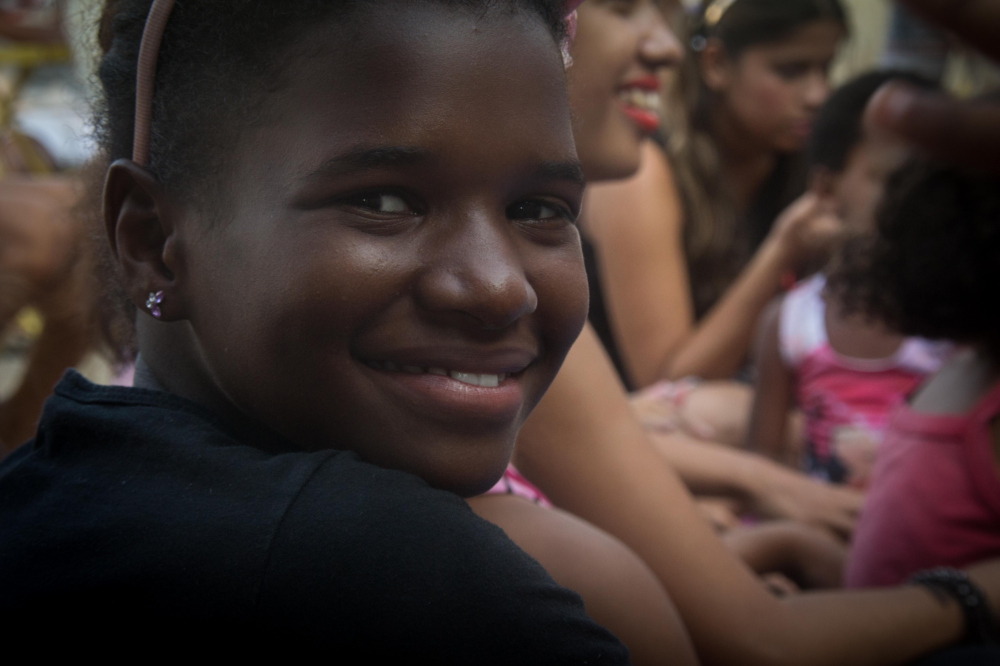
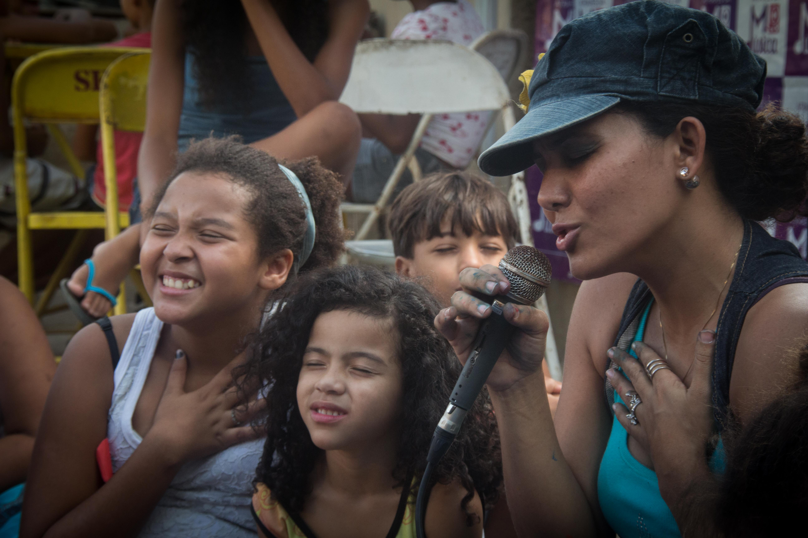
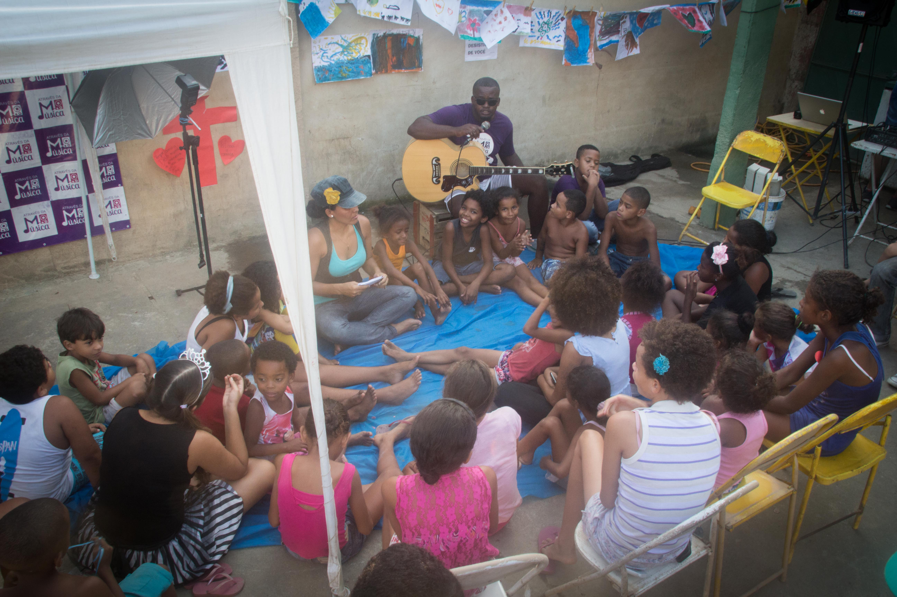
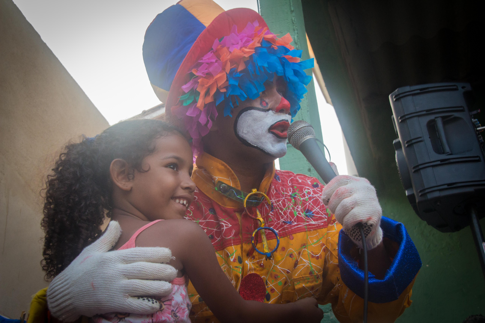
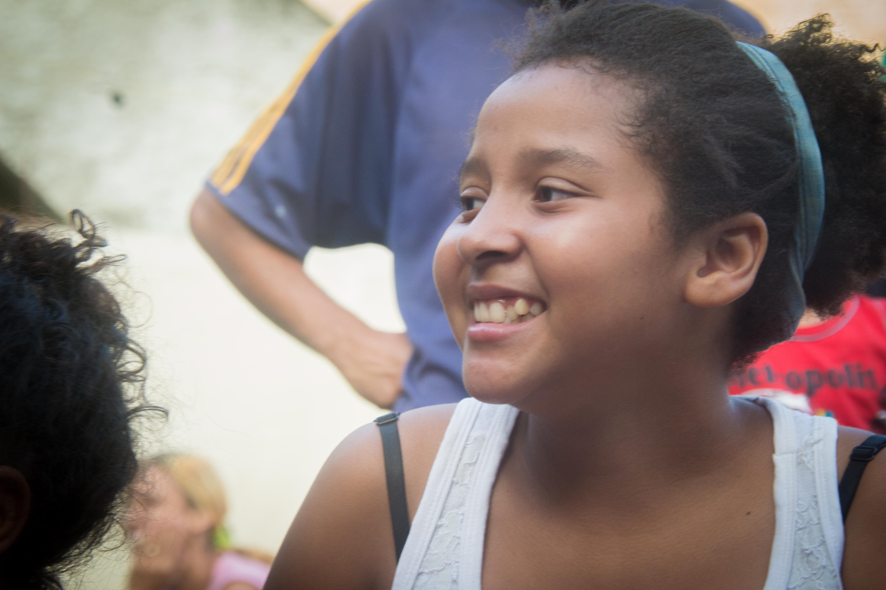
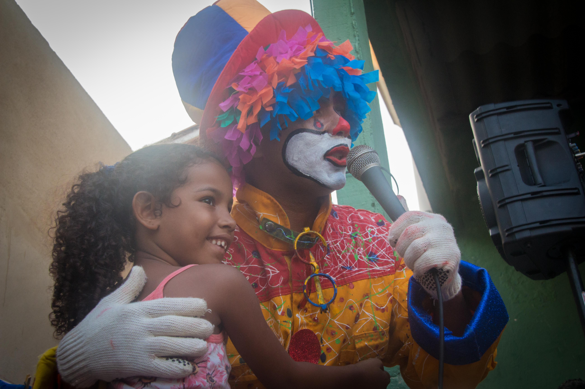
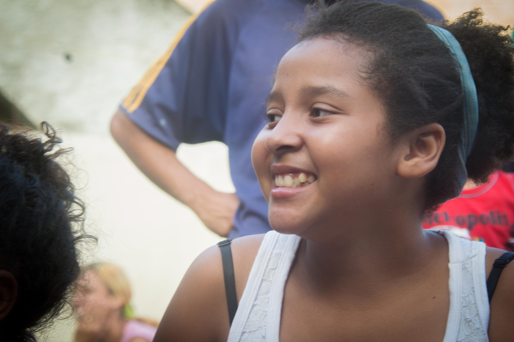

Sobre
Enxergamos a arte e a cultura como instrumentos de mudança e transformação social. Através da Música, compreendemos as vontades, anseios e sonhos de crianças e adolescentes que caminham em direção a um futuro mais próspero, saudável e cheio de harmonia, ritmo e melodia.
O Através da Música confia no potencial de transformação a partir da proximidade com práticas artísticas. Ao tocar um instrumento musical, cantar, dançar, criar e imaginar, os jovens têm a oportunidade de aprender mais e melhor, interagir, descobrir e evoluir de diversas formas.
ATIVIDADES
Nossas atividades não se limitam aos cursos que promovemos. O acolhimento de crianças e adolescentes também acontece através de passeios e convites pela comunidade, incluindo oficinas para incentivar os jovens a descobrir o gosto pela arte e pelo criar.
Oficina de Leitura
A criança que é estimulada a ler aprende com os livros novas formas de interpretar a vida. O exercício de criar, imaginar e interagir com as histórias possibilita experimentar os modos de falar, agir, pensar e descobrir um universo de valores, costumes e comportamentos.
Oficina de Música
- Canto
- Violão
- Teclado
- Flauta
- Bateria
Oficina de Dança
Aqui os alunos trabalham disciplina, mente, corpo e espírito. O aprendizado e a inspiração transbordam para outros aspectos da vida do jovem, como o desenvolvimento de sua sociabilidade, o incentivo a novas amizades e o conhecimento do próprio corpo.
Oficina de Artesanato
Além dos benefícios terapêuticos as oficinas de artesanato são um estímulo ao empreendedorismo para os pais dos alunos.
Galeria

 






 



CONTRIBUA
Doe materiais para as oficinas folhas A4, canetas, lápis, giz de cera, tintas guache, pincéis…
Doe alimentos não perecíveis Mensalmente assistimos famílias em situações precárias com cestas básicas.
Sua doação é importante para mantermos as oficinas de artesanato, fortalecer a estrutura da sede e conquistarmos maior impacto com o projeto.